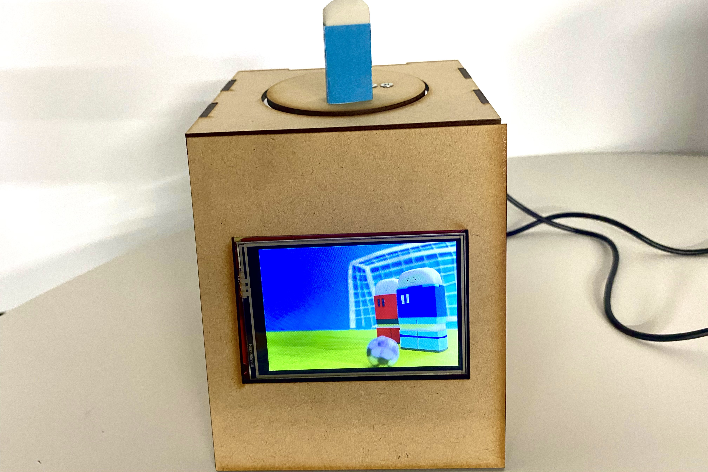
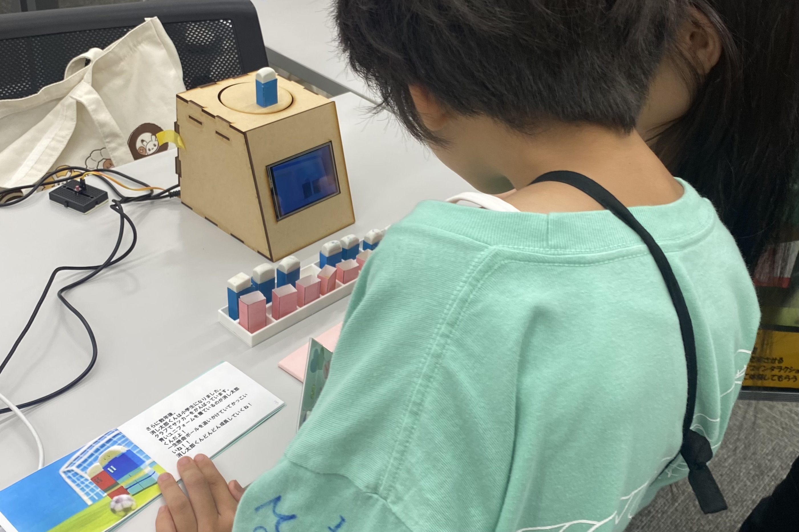
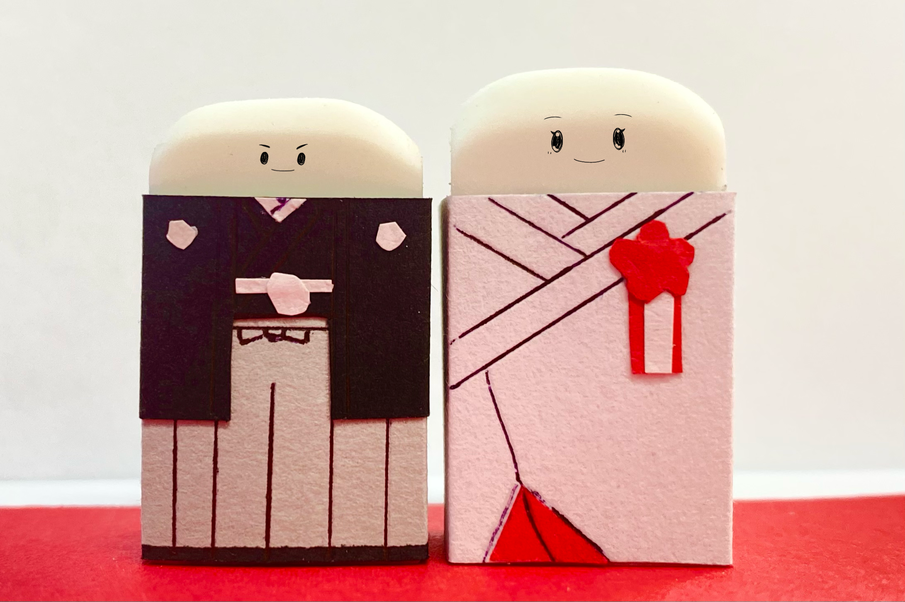
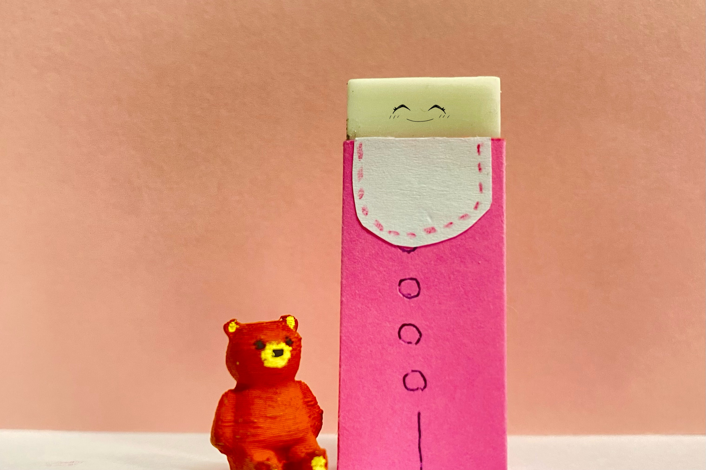
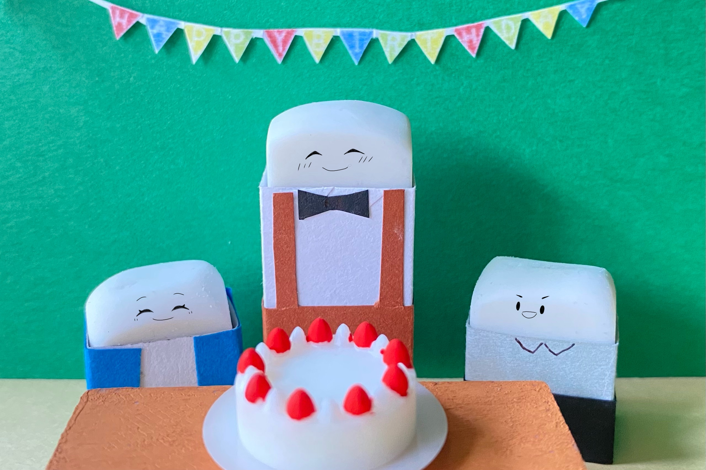
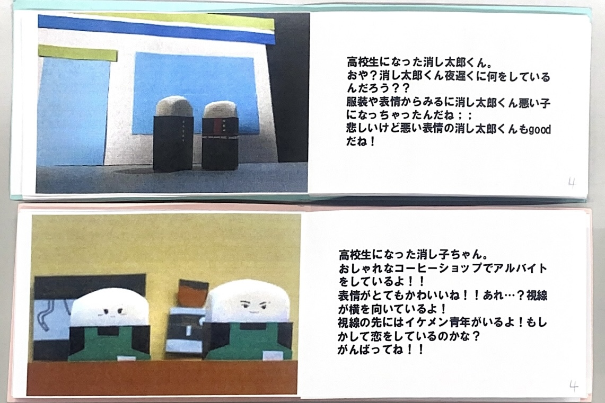

消しゴムに物語を与えた作品．






Arduino,RFIDリーダ,ロードセル,TFTディスプレイ
消しゴムを消すことで物語が進行する．消しゴムは新品の状態があかちゃんで，使用していくにつれて年をとっていく．消しゴムを使用し，写真立て型デバイスに 乗せることで，デバイスにそのときの消しゴムの物語が画像として表示される．また，消しゴムは2つ用意されており，2匹の消しゴムの物語を観ることができる．2匹の消しゴムには 関係性があり，2つの物語を観ることで，初めて物語の全体を理解することができる．また，物語を説明する絵本を用意しており，体験者の物語理解を助ける．
この作品はナラティブインタラクションという自身が提唱するインタラクションの概念の検証のため，卒業研究で制作された．
ナラティブインタラクションは，人と物のインタラクションを通じて，物に物語を与えるものである．
ナラティブインタラクションは，2つのインタラクション手法を包括する概念である．
1つ目：物語を伝えるためのインタラクション
2つ目：インタラクションそのものに物語性を与える
この作品は1つ目のインタラクション手法に基づいて制作された．
この作品は，オープンキャンパスや，多摩センターで展示を行なった．
消しゴムの重さと，カバーに貼り付けてあるNFCタグにより，どの物語を表示するのか判定を行う．使用度合いの判定はロードセルを用いており，カバーの判定にはRFIDを用いて実装を行なった．
Arduino
NanoでロードセルとRFIDリーダから値を取得し，取得した値をESP32にUART通信を用いて送信する．その値を元にSDカードに保存された写真から適した写真をTFTディスプレイに表示する．
物語用の画像は手作りで制作しており，実際の消しゴムの大きさで写真撮影を行なった．服や小物は，画用紙や3Dプリンタを用いて制作した．
また，デバイスの外観はレーザーカッターを用いてMDFで制作した．